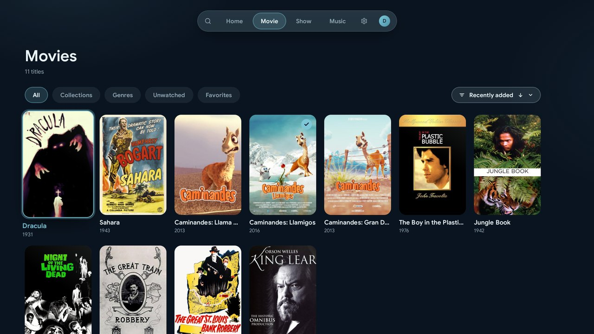
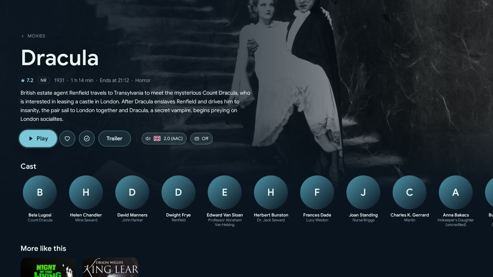
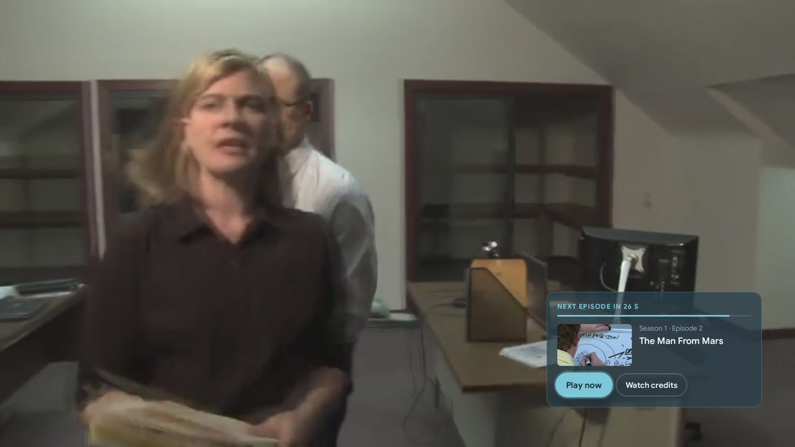
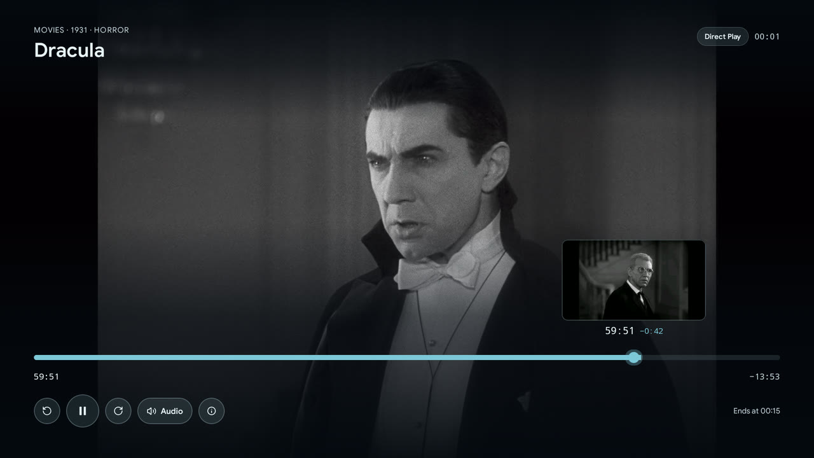

Jellyfin,
made simple.
Glacier is a modern Jellyfin client designed for the TV from the ground up, not ported to it — built to get out of the way, so finding something to watch stays the whole point.
- Android TV, Google TV & Fire TV
- Open source under GPL-3.0
- No ads, no tracking
Clear by design
One obvious path to what you want to watch, not a maze of menus borrowed from a phone app.
Built for the remote
Every screen designed around D-pad navigation from day one — focus, spacing and motion tuned for the couch, not adapted from touch.
Nothing in the way
No ads, no account walls, no clutter competing for attention — just your library, presented cleanly.

Library
Browse everything, your way
Every library in one place, kept simple: the sorting and filtering you'd expect from a modern app, presented without the clutter.
- Sort and filter by genre, favorites or unwatched
- Related movies grouped into collections
- An A–Z rail for jumping around large libraries

Details
Every title, fully explored
Cast, crew and context on every detail page, with trailers and track choices one click away.
- Cast, crew and similar titles
- Local and YouTube trailers, played inline
- Audio and subtitle track picker


Player
Made for watching, not for fiddling
The player handles the small interruptions for you, so an evening of episodes runs on its own.
- Skip intros, recaps and credits with one press, or let Glacier skip them for you
- The next episode starts after a short countdown, or stay for the credits
- Preview pictures while seeking, so you land exactly on the right scene
Everything else
The details, without the complexity
Beyond browsing and playback, the details that make a shared TV app simple to live with.
Profiles & Quick Connect
One device, several people. Switch profiles instantly and sign in to a new server with a six-digit Quick Connect code.
Parental controls
Age ratings and a PIN keep locked titles and settings out of reach, per profile.
Accurate playback
Media3/ExoPlayer with an extended FFmpeg audio codec set, so more of your library plays back directly instead of transcoding.
Find & request
Search also finds movies and shows that are not on your server yet. Request them through Seerr right from the TV, with the Jellyfin Enhanced plugin.
Music that keeps playing
Albums, playlists and lyrics with a mini player. The music plays on while you browse the rest of your library.
Stays current
A built-in updater checks GitHub Releases for new Stable or Beta builds and installs them without a detour through a browser.
Get it
Install Glacier
Download the APK from the latest release and install it on your TV; from then on Glacier keeps itself up to date.
Support
Like Glacier?
Glacier is built in spare time and stays free, with no ads and no tracking. If it makes your evenings a little better, a coffee on Ko-fi keeps development going.